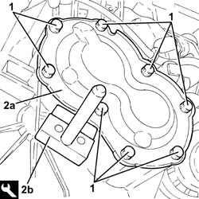
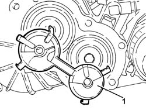
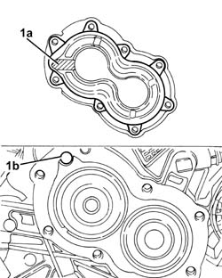
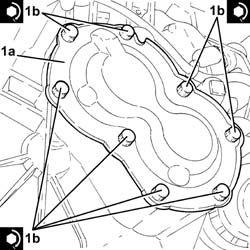

2110C30 GEARBOX REAR COVER - R + R.
- Path
- Procedures > 21 GEARBOX UNIT > 2110 MANUAL GEARBOX WITH DIFFERENTIAL > 2110C GEAR CASES AND COVERS FOR MANUAL GEARBOX WITH DIFFERENTIAL > 2110C30 GEARBOX REAR COVER - R + R.
- Kind
- repair procedure (removal / refitting; the operation number is the code)
- Applies to
- engines: 2.2; all production periods
- Interactive page
- https://sloeber94.github.io/elrnDB-fCrm/en/#/194000447
Applies to: engines: 2.2; all production periods
 Removing
Removing
 Refitting
Refitting- Position the vehicle on a lift.
1. Undo the bolts fixing the gearbox rear cover.
2. Detach the gearbox rear cover (2a) using the tool (2b) and remove it.
Tool | Description | Function | Validity |
|---|---|---|---|
1870718000 | Blade | Cut sealant |

Applies to: engines: 2.2; all production periods
1. Remove the fluid collection pipe.

Applies to: engines: 2.2; all production periods
Refitting
Removing- Thoroughly clean the contact surfaces.
1. Apply (black) adhesive sealant paste to the gearbox rear cover leaving the shaded area (1a) free so as not to block the oil duct (1b).

Applies to: engines: 2.2; all production periods
- Refit the fluid collection pipe.
1. Place the gearbox rear cover (1a) in its housing and secure it tightening the bolts (1b) to the recommended torque.
Component | Fastening | dia | Value (daNm) | Validity |
|---|---|---|---|---|
Gearbox rear cover | Bolt | - | (gearbox casing side) 2.5 | 2.2 |

Applies to: engines: 2.2; all production periods
Op. 0010T41 MANUAL GEARBOX OIL CHECK LEVEL AND TOP UP IF NECESSARY
- Remove the vehicle from the lift.